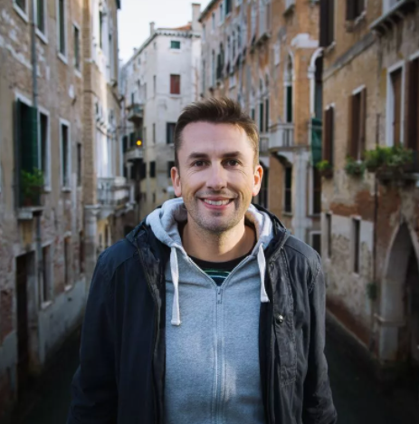

I was born and raised in a small sheep farming community in Australia, called Byaduk. With a population of 40 people, most of the town were our family.
Escaping my destiny as a sheep farmer, I moved to London in 2008 where I worked as a change manager specialising mostly in organisational design. But, with a desire to travel too strong, I quit my job in 2016 to focus on other things.
I’m a self-confessed coffee snob, play the piano occasionally, and take most of the photos for this blog. My ideal restaurant would have no menu at all, chocolate is my weakness and I can spend hours fixing a microscopic spacing issue on this site. I think LA is actually OK.
